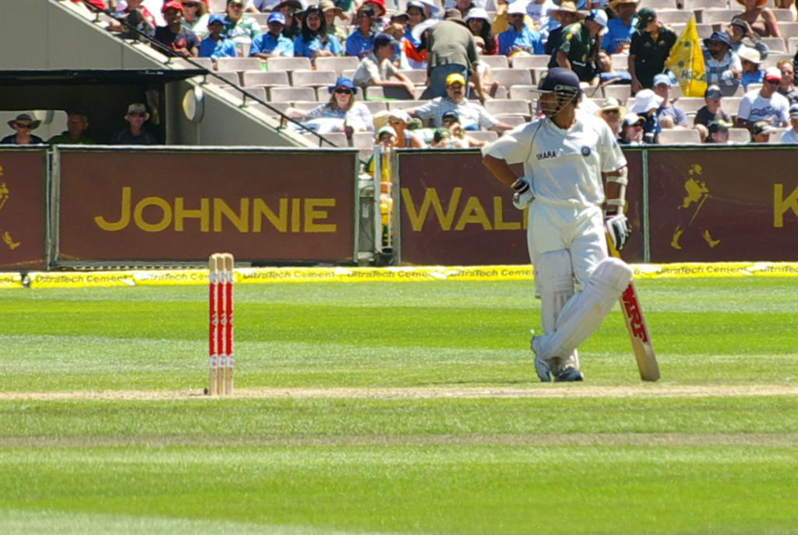

In this example, the image will float to the right in the paragraph, and the text in the paragraph will wrap around the image.
 The drawn series as India toured Australia in 2003–04 saw Tendulkar making his mark in the last Test of the series, with 241 not out from 436 ball by 33 four at strike rate of 55.27 in Sydney, putting India in a virtually unbeatable position. He spend 613 minut at crease.India have a first inning score of 705/7. He followed up the innings with an unbeaten 60 in the second innings of the Test. Prior to this Test match, he had had an unusually horrible run of form, failing in all six innings in the preceding three Tests.[citation needed] It was no aberration that 2003 was his worst year in Test cricket, with an average of 17.25 and just one fifty.[118][better source needed]
Tendulkar scored an unbeaten 194 against Pakistan at Multan in the following series. Indian captain Rahul Dravid declared before Tendulkar reached 200; had he done so it would have been the fourth time he had passed the landmark in Tests. Tendulkar said that he was disappointed and that the declaration had taken him by surprise. Many former cricketers commented that Dravid's declaration was in bad taste.[121][122] After the match, which India won, Dravid said that the matter had been discussed internally and put to rest.[123]